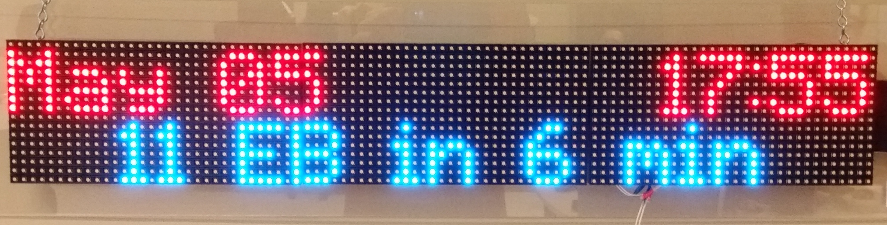

class: center, middle # busbus <!-- note the two trailing spaces in this line create a line break. markdown is terrible --> Alex Gustafson, Ian Weller, Monica Shafii, Nick Gilliland, Zane Ralston spaceboats GmbH — [spaceboats.github.io](https://spaceboats.github.io/) --- # Introduction TODO: Change text to better text 1. Understanding the problem 2. The goal 3. Current state of busbus --- # busbus core <div class="contain title center"> <iframe style="overflow: hidden; margin: 0px; border: 0px none; display: inline-block; width: 565px; float: none; visibility: visible; height: 421px;" allowfullscreen="true" scrolling="no" name="asciicast-iframe-2116" id="asciicast-iframe-2116" src="https://asciinema.org/api/asciicasts/2116?"></iframe> </div> --- # Web App --- # Android App 1. Get static and realtime arrivals 2. Display closest stops on the map 3. Provides a good starting point for developers --- class: center <div class="contain"> <video controls> <source src="assets/androiddemo.mp4" type="video/mp4"> </video> </div> --- # LED Board 1. Previously written mainly in C++ with some Python (last semester) 2. Has been completely rewritten with Node.js 3. Web API 4. Web interface 